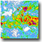
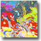
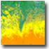

http://ags.servirlabs.net/ArcGIS/rest/services/ReferenceNode
|  |
REST: http://ags.servirlabs.net/ArcGIS/rest/services/ReferenceNode/TRMM/MapServer
WMS: http://ags.servirlabs.net/ArcGIS/services/ReferenceNode/TRMM/MapServer/WMSServer
|
REST:http://ags.servirlabs.net/ArcGIS/rest/services/ReferenceNode/TRMM_1DAY/MapServer
WMS: http://ags.servirlabs.net/ArcGIS/services/ReferenceNode/TRMM_1DAY/MapServer/WMSServer
|
REST:http://ags.servirlabs.net/ArcGIS/rest/services/ReferenceNode/TRMM_7DAY/MapServer
WMS: http://ags.servirlabs.net/ArcGIS/services/ReferenceNode/TRMM_7DAY/MapServer/WMSServer
|
|  |
REST:http://ags.servirlabs.net/ArcGIS/rest/services/ReferenceNode/Basemaps_HWSD_Soils/MapServer
WMS: http://ags.servirlabs.net/ArcGIS/services/ReferenceNode/Basemaps_HWSD_Soils/MapServer/WMSServer
|
|  |
REST:http://ags.servirlabs.net/ArcGIS/rest/services/ReferenceNode/MODIS_Landcover_Type1_2001/MapServer
WMS: http://ags.servirlabs.net/ArcGIS/services/ReferenceNode/MODIS_Landcover_Type1_2001/MapServer/WMSServer
|